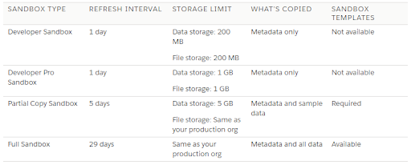
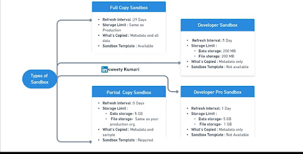

SandBox
Salesforce Sandbox
-
With respect to Salesforce, a Sandbox is nothing but a replica of your production organization. These copies are created by Salesforce Developers to perform activities such as testing and training without affecting the main production organization.
-
When you use Sandboxes in salesforce, you can create one or more copies of the central production organization in different environments of Salesforce. Each of these copies now functions as your original organization and would respond to changes just like the original production environment would. However, the changes made to the copies would not affect the data and applications pertaining to the main production organization.
-
Sandboxes can also be used to provide extensive training to team members who are new to the platform without affecting the workings of the main production department. This separation of testing and training from production results in seamless user experience.
-
Sandboxes prove to be extremely useful in executing new projects. Every phase of a project requires different Salesforce environments to be used. For instance, in the construction phase, different teams are likely to work in different environments. In such cases, it is beneficial for every team to have different Sandboxes to perform development activities. Once the development is completed, the teams would require separate testing and training environments which can again be provided by using different Sandboxes in Salesforce. This way, Salesforce Sandboxes can prove to be useful for the successful execution of Salesforce projects..
There are 4 types of sandboxes namely
- Developer Sandbox
- Developer Pro Sandbox
- Partial Copy Sandbox
- Full Sandbox.
-
Developer sandbox is a special type of configuration only sandbox that is intended for coding and testing purpose for a single developer and has a 200 MB Data limit + 200 MB File Storage Limit.
-
Developer Pro sandbox is also a special type of configuration only sandbox that is intended for coding and testing purpose for a single developer and has a 1 GB Data limit + 1 GB File Storage Limit. It’s like the Developer sandbox with more space.
-
Partial Copy sandbox contains only the schema and some data of the production box which means it contains all the objects, reports, dashboards, documents and attachments and has a 5 GB Data limit + 5 GB File Storage Limit. This type of sandbox is intended for specific uses (for business or technical purpose) around a subset of schema & data. Therefore, a sandbox template (outlining the set of objects & data requirements) is often REQUIRED for creating the “Partial Copy Sandbox”.
-
Full sandbox is an exact copy of your production environment with all the data and schema. It has the same data limit as the production box.
NOTE : For “Enterprise Edition” by default 25-Developer sandbox and 1-Partial copy sandbox is available.
Whereas for Developer pro and Fully Copy Sandbox, we need to purchase a license.
Salesforce Sandbox Life Cycle
 Salesforce sandboxes are used for development, testing, and training purposes within the Salesforce platform. They provide isolated environments that allow developers and administrators to build and test changes without affecting the production instance of Salesforce.
Sandboxes are meant to mirror various configurations and customizations of your production environment, and they follow a lifecycle similar to the following stages:
-
Creation
-
Development and Testing
-
Testing and Quality Assurance (QA)
-
User Acceptance Testing (UAT)
-
Training
-
Deployment
-
Refresh
-
Archiving and Deletion
-
Creation: Sandboxes are created by copying the configuration and data from your production or another sandbox environment. There are different types of sandboxes, each serving different purposes. For instance:
-
Full Copy Sandbox: Contains a full copy of your production data and metadata.
-
Developer Sandbox: Primarily for coding and testing, containing only metadata and a small amount of data.
-
Partial Copy Sandbox: Contains a subset of your production data along with metadata.
-
Development and Testing: Once a sandbox is created, developers and administrators can work on customizations, coding, integrations, and other changes without affecting the production environment. This is the stage where changes are implemented and tested thoroughly.
-
Testing and Quality Assurance (QA): Sandboxes are used for testing changes to ensure they work as intended and do not negatively impact the system. Testing can involve functional, performance, security, and integration testing to catch any issues before deployment.
-
User Acceptance Testing (UAT): In this phase, sandboxes can be used to conduct UAT, where end-users validate the changes made in the sandbox environment to ensure they meet their requirements.
-
Training: Sandboxes can be used for training purposes, allowing users to familiarize themselves with new features, processes, and customizations without affecting the production environment.
-
Deployment: Once changes have been thoroughly tested and validated in the sandbox, they can be deployed to the production environment. Salesforce provides tools and mechanisms to move changes from sandbox to production while preserving data integrity and minimizing disruptions.
-
Refresh: Sandboxes can be periodically refreshed to bring in updated data and metadata from the production environment. This helps ensure that the sandbox remains an accurate representation of the production environment
-
Archiving or Deletion: Unused or old sandboxes can be archived or deleted to free up resources and maintain an organized environment. It's important to manage sandboxes efficiently to prevent unnecessary costs and clutter.